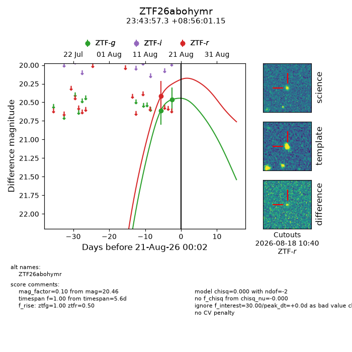
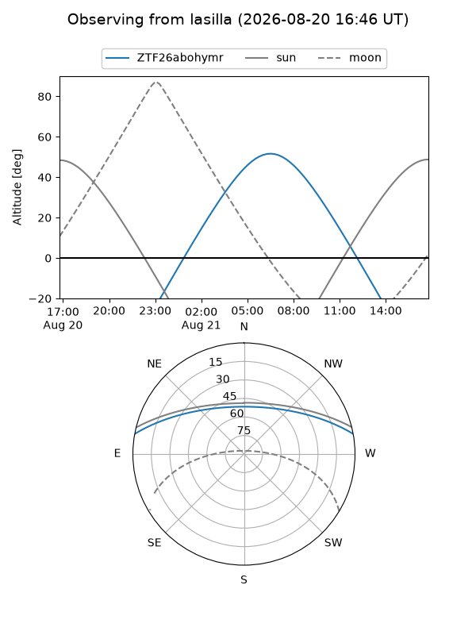
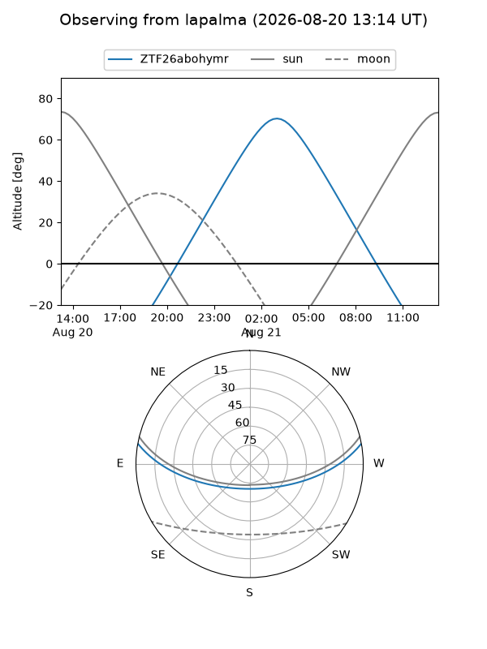
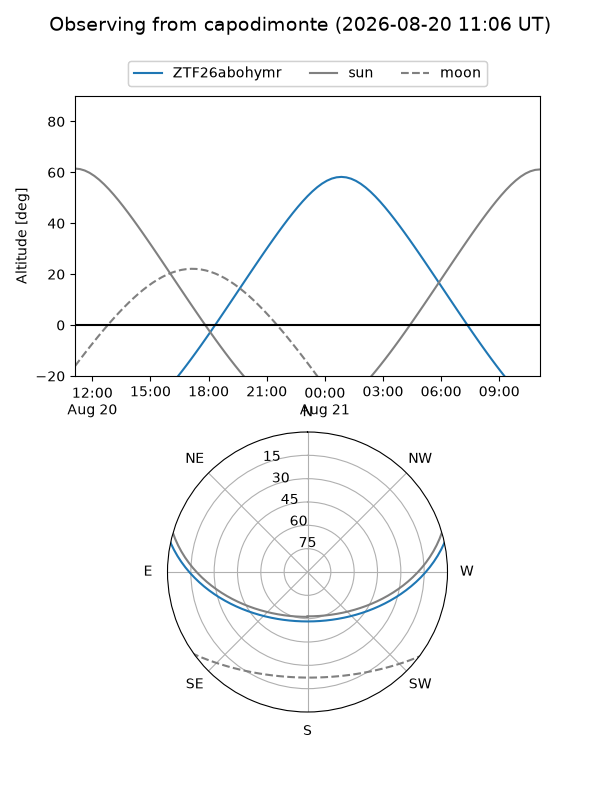
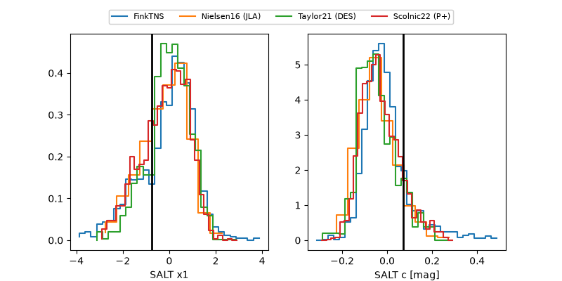

ZTF26abohymr
Target ZTF26abohymr at 2026-08-21 11:56
Aliases and brokers:
FINK-ZTF: ztf.fink-portal.org/ZTF26abohymr
Lasair-ZTF: lasair-ztf.lsst.ac.uk/objects/ZTF26abohymr
ALeRCE-ZTF: alerce.online/object/ZTF26abohymr
Direct TNS query: direct search
alt names
ZTF26abohymr (ztf,fink_ztf)
Coordinates:
equatorial (ra, dec) = 355.9886,+8.93365
equatorial (HMS+DMS) = 23:43:57.26,+08:56:01.15
galactic (l, b) = (96.2013,-50.40259)
Flags:
peak dt: +0.5
Photometry:
last ztfg=20.46, ztfr=20.42
2 ztfg, 1 ztfr detections
Lightcurve

Visibility



Additional plots
